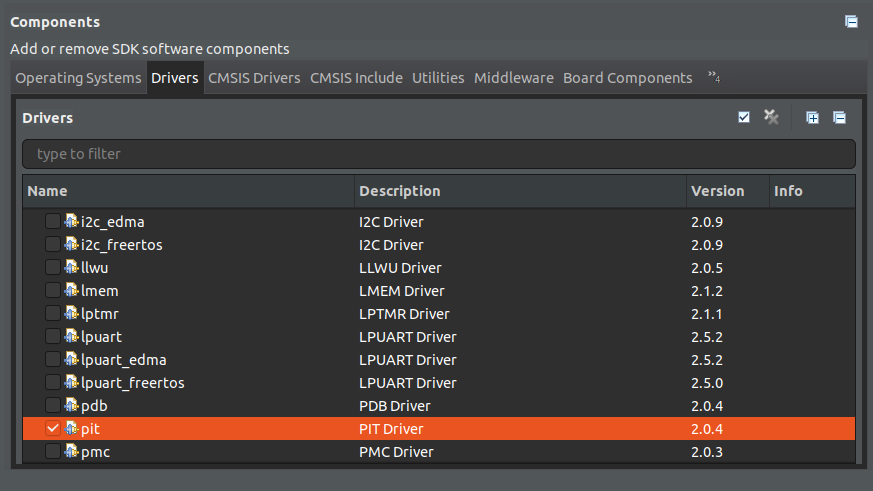
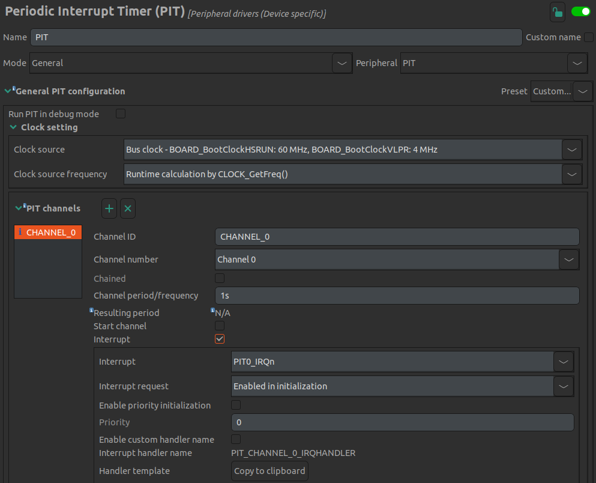

Lab 6 : Timer Interrupt and C Code
Seneca Polytechnic SEH500 Microprocessors and Computer Architecture
Introduction
Documentation of the Cortex-M4 instruction set can be found here:
- Arm Cortex-M4 Processor Technical Reference Manual Revision (PDF)
- ARMv7-M Architecture Reference Manual (PDF)
In our labs so far, we've been programming the processor directly using assembly language. In this lab, we'll explore combining assembly language with C programming language and how to use them interchangeablely in a program.
Procedures
-
Open MCUXpresso then start a new C/C++ project based on the Freedom board model that you have.
-
In the new project configuration, this time, also select "pit" as one of the driver. Rename the project then leave all other settings as default.

Figure 6.1 Select pit in the project setting
-
In previous labs, we wrote all of our code in assembly language using the
.sfile extension. In this lab, we are going to explore how to integrate C-code together with assembly code in a single project. The first way of integrating assembly code into a C-program is by using the inline assembler method.__asm volatile (" <Assembly Code Here> ");Replace (or comment out) the PRINTF "Hello World" line from the starting example code then add the following:
__asm volatile (" mov r0, #1 "); -
Next, build and create the dissambly code (or inspect from the dissambly view window during debug).
Question 1: Find the inline assembly code
mov r0, #1from Step 4 from the disassembly view. Take a screenshot of it and confirm that the C-code and the assembly code are the same. -
You can also write multi-line inline assembly code as below. As the
__asmfunction is a direct replicate of what you wrote into assembly, you'll need to use newline character to specify a newline in assembly. You can also align your C-code to make it more readable.__asm volatile (" mov r0, #1 \n" " mov r3, #0x75 "); -
Continue adding to the inline assembly code with the following code from Lab 5 Example Code 5.2.
mov r0, #1 mov r3, #0x75 push {r0, r3} mov r0, #6 mov r3, #7 pop {r0, r3} -
Another method to include assembly code is by adding a
.sfile into the project. Create afunction.sfile in the source folder and paste the following extract from Lab 5 into it..syntax unified @ unified syntax used .cpu cortex-m4 @ cpu is cortex-m4 .thumb @ use thumb encoding .text @ put code in the code section .global function1 @ declare as a global variable .type function1, %function @ set to function type function1: push {r5, lr} @ Save values in the stack mov r5, #8 @ Set initial value for the delay loop delay: subs r5, r5, #1 bne delay pop {r5, pc} @ pop out the saved value from the stack -
Next, place a function prototype at the top of your code in your
.cfile and a function call after your inline assembly code you wrote easier but before the while loop into your main function.Add this on top:
void function1();And this after your inline assembly code:
function1(); -
Set a breakpoint at the
__asmfunction then debug your code. Once the program start, hit resume until it reach the breakpoint then "Step Into (F5)" the code and see what happens. You debugger should jump from the.cfile to the code in your assembly file when it hit the function call. -
Your task now is to translate the assembly code in the loop portion of Lab 5 (see below) into C-code. Read and understand the assembly code so the intention will be the same once translated into C. Do not use any inline assembly code except for moving data directly into register, ie
mov r5, #9. Use variables and function call to perform all other operation.Translate the following:
loop: add r0, r0, #1 cmp r0, #5 bne loop mov r5, #9 bl function1 mov r3, #12You can use a
forloop or awhileloop along with an integer as the counter. After you are done and get the same desired result as you got from Lab 5, find compiled assembly code from the C-code you wrote.Question 2: Compare and comment on the difference between the compiled assembly code and the assembly code given in terms of the type and number of instructions used.
Question 3: Take a screenshot of your
whileorforloop C-code and its assembly code and paste them into Blackboard. -
Lastly, we are going to familarize ourself with the idea of interrupt by including a periodic interrupt timer (PIT) into our code to generate an interrupt once every second. Instead of programming the interrupt from scratch, we'll use the built-in ConfigTools in MCUXpresso for ease of implementation. The ConfigTools allow us to setup components of the processor and the microcontroller board in a quick and fast manner instead of manually coding all the necessary settings. Go to "ConfigTools > Peripherals" from the top menu. In the "Components" tab, Under "Peripheral drivers (Device specific)" add the "PIT" configuration components.
-
Under the PIT settings, uncheck "start channel". Leave everything default so the setting page should look like this:

Figure 6.2 PIT settings
-
Once confirmed, click "Update Code" at the top menu button bar and click yes when prompted. The
peripherals.candperipherals.hwill now be updated accordingly to include the timer interrupt settings. -
Next, we'll need to add some code for the interrupt handler and to start the interrupt.
Paste the following handler code into your program on top of main.
void PIT_CHANNEL_0_IRQHANDLER(void) /*ISR to process PIT channel 0 interrupts*/ { PIT_ClearStatusFlags(PIT, PIT_CHANNEL_0, kPIT_TimerFlag); //clear PIT channel 0 interrupt status flag PRINTF("*\r\n"); }Then use the following code to start the PIT in your main function. You can put it at the beginning of main after all the initialization or just before the empty while loop.
PIT_StartTimer(PIT_PERIPHERAL, PIT_CHANNEL_0); -
Build and debug. Open a serial monitor to see the serial output. Let the program run and you should see an "*" being printed every second. Verify with a watch that the output is once per second.
Question 4: Take a screenshot of your serial monitor output and paste it into Blackboard.
Lab Questions
Submission of answers or code generated by AI, or from external help, containing concepts or instructions not shown/taught/discussed in this course will immediately result in a report of Academic Integrity violation.
If GenAI was used as a learning aid, you must cite it for every answer that used GenAI as a tool, as follows:
- GenAI used: Copilot for concept research; ChatGPT for editing and grammar enhancement; Gemini for code generation in section 1, as identified.
Using the skills and knowledge acquired from this lab, answer the following post-lab question(s) on Blackboard. Due one week after the lab.
-
Find the inline assembly code
mov r0, #1from Step 4 from the disassembly view. Take a screenshot of it and confirm that the C-code and the assembly code are the same. Copy and paste your code with your answers, along with the necessary screenshots, into Blackboard. No mark will be awarded if no screenshot with the expected result is provided. -
Compare and comment on the difference between the compiled assembly code and the assembly code given in Step 10 in terms of the type and number of instructions used.
-
Take a screenshot of your
whileorforloop C-code and its assembly code and paste them into Blackboard. No mark will be awarded if no screenshot with the expected result is provided. -
Take a screenshot of your serial monitor output from Step 15 and paste it into Blackboard. No mark will be awarded if no screenshot with the expected result is provided.
-
Modify your code from Step 15 so instead of printing "*" every second (from your timer interrupt function), print a statement that displays the number of minute(s) and second(s) since the timer started, along with your name. You can be creative.
... (Someone) started the timer 0 min 59 sec ago (Someone) started the timer 1 min 0 sec ago (Someone) started the timer 1 min 1 sec ago ...Paste your code and a screenshot of the output into Blackboard. No mark will be awarded if no screenshot with the expected result is provided.
Reference
[1] Yiu, J. (2013). The Definitive Guide to ARM® Cortex®-M3 and Cortex®-M4 Processors. (3rd ed.). Elsevier Science & Technology.